Aplicar las ecuaciones
1La ecuación de posición
de un m.a.s es: x = 20 sen (πt/4) (x: cm, t: s). Determina:
a)
Elongación, velocidad y aceleración en los instantes
t = 0.5, 2.5, 5, 6.5 s
b) Cuando
la elongación será de 10 cm
c) Cuando
la velocidad será 3.54π cm/s
d) Cuando
la aceleración será 1.08π2 cm/s2
Solución
Ecuaciones del movimiento:
| $$\left.\begin{aligned}&x=A\operatorname{sen}(\omega\,t)\\[4pt]&v=A\,\omega\cos(\omega\,t)\\[4pt]&a=-A\,\omega^2\operatorname{sen}(\omega\,t)\end{aligned}\right\}$$ |
Parámetros A = 20 cm, ω = π/4 rad/s (T = 2π/ω = 8 s) φ = 0 |
Aplicación
Datos: t1 = 0.5 | 2.5 | 5 | 6 s , Incógnitas: x1, v1, a1
$$\left.\begin{aligned}&x_1=A\operatorname{sen}(\omega\,t_1)\\[4pt]&v_1=A\,\omega\cos(\omega\,t_1)\\[4pt]&a_1=-A\,\omega^2\operatorname{sen}(\omega\,t_1)\end{aligned}\right\}$$
Como las incógnitas están despejadas basta con sustituir los valores del tiempo:
|
$$\begin{aligned}&x_1=20\ \mathrm{cm}\operatorname{sen}\left(\frac{\pi}{4}\ \mathrm{\frac{rad}{s}}\;0{,}5\ \mathrm{s}\right)=7{,}65\ \mathrm{cm}\\[6pt] &v_1=20\ \mathrm{cm}\;\frac{\pi}{4}\ \mathrm{\frac{rad}{s}}\cos\left(\frac{\pi}{4}\ \mathrm{\frac{rad}{s}}\;0{,}5\ \mathrm{s}\right)=14{,}5\ \mathrm{\frac{cm}{s}}\\[6pt] &a_1=-20\ \mathrm{cm}\left(\frac{\pi}{4}\ \mathrm{\frac{rad}{s}}\right)^2\operatorname{sen}\left(\frac{\pi}{4}\ \mathrm{\frac{rad}{s}}\;0{,}5\ \mathrm{s}\right)=-4{,}72\ \mathrm{\frac{cm}{s^2}}\end{aligned}$$ |
 | |
|
Está a la derecha del observador moviéndose hacia la derecha y frenando | ||


Ecuaciones del movimiento:
| $$\left.\begin{aligned}&x=A\operatorname{sen}(\omega\,t)\\[4pt]&v=A\,\omega\cos(\omega\,t)\\[4pt]&a=-A\,\omega^2\operatorname{sen}(\omega\,t)\end{aligned}\right\}$$ |
Parámetros A = 20 cm, ω = π/4 rad/s (T = 2π/ω = 8 s) φ = 0 |
Aplicación:
Datos: x2 = 10 cm, Incógnitas: t2
$$\begin{aligned}&x_2=A\,\omega\operatorname{sen}(\omega\,t_2)\\[6pt] &\omega\,t_2=\operatorname{asen}\left(\frac{x_2}{A}\right)=\operatorname{asen}\left(\frac{10\ \mathrm{cm}}{20\ \mathrm{cm}}\right)\;\rightarrow\;\frac{\pi}{4}\ \mathrm{\frac{rad}{s}}\;t_2=\htmlData{pc-ac=ac4}{\boxed{\left\{\begin{aligned}&(0{,}17\pi+k\,2\pi)\ \mathrm{rad}\\[4pt]&(0{,}83\pi+k\,2\pi)\ \mathrm{rad}\end{aligned}\right.}}\\[6pt] &\left\{\begin{aligned}&t_2=\frac{(0{,}17\pi+k\,2\pi)\ \mathrm{rad}}{\pi/4\ \mathrm{rad/s}}=(0{,}68+k\,8)\ \mathrm{s}\\[4pt]&t_2=\frac{(0{,}83\pi+k\,2\pi)\ \mathrm{rad}}{\pi/4\ \mathrm{rad/s}}=(3{,}32+k\,8)\ \mathrm{s}\end{aligned}\right.\end{aligned}$$
Se obtienen dos series de infinitos valores del tiempo separados por el valor del período (8 s)
$$t_2=(0{,}68+k\,8)\ \mathrm{s}\;\rightarrow\;\left\{\begin{aligned}&k=0\quad t_2=0{,}68\ \mathrm{s}\\[2pt]&k=1\quad t_2=8{,}68\ \mathrm{s}\\[2pt]&\ldots\ldots\end{aligned}\right.\qquad t_2=(3{,}32+k\,8)\ \mathrm{s}\;\rightarrow\;\left\{\begin{aligned}&k=0\quad t_2=3{,}32\ \mathrm{s}\\[2pt]&k=1\quad t_2=11{,}3\ \mathrm{s}\\[2pt]&\ldots\ldots\end{aligned}\right.$$
La primera serie de tiempos corresponde a una fase 0.17π:
el móvil estará a la derecha del observador (x = 10 cm)
moviéndose hacia la derecha
La segunda serie de tiempos corresponde a una fase 0.83π: el móvil
estará a la derecha del observador (x = 10 cm) moviéndose
hacia la izquierda
En cada oscilación, el móvil pasa dos veces por cada posición y lo hace con velocidades iguales y opuestas (Excepto en cada uno de los extremos donde está una sola vez con velocidad 0)
Valores del tiempo ordenados: t2 = 0,68, 3,32, 8,68, 11,3,...s
|
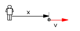 | t = 0,68 s x = 10 cm v = 13.6 cm/s |
¿Has notado que entre dos pasos consecutivos no transcurre el mismo tiempo? ¿sabes por qué?
Ecuaciones del movimiento:
| $$\left.\begin{aligned}&x=A\operatorname{sen}(\omega\,t)\\[4pt]&v=A\,\omega\cos(\omega\,t)\\[4pt]&a=-A\,\omega^2\operatorname{sen}(\omega\,t)\end{aligned}\right\}$$ |
Parámetros A = 20 cm, ω = π/4 rad/s (T = 2π/ω = 8 s) φ = 0 |
Aplicación:
Datos: v3 = 3.54π cm/s, Incógnitas: t3
$$\begin{aligned}&v_3=A\,\omega\cos(\omega\,t_3)\\[6pt] &\omega\,t_3=\operatorname{acos}\left(\frac{v_3}{A\,\omega}\right)=\operatorname{acos}\left(\frac{3{,}54\pi\ \mathrm{cm/s}}{20\ \mathrm{cm}\;\pi/4\ \mathrm{rad/s}}\right)\;\rightarrow\;\frac{\pi}{4}\ \mathrm{\frac{rad}{s}}\;t_3=\htmlData{pc-ac=ac5}{\boxed{\left\{\begin{aligned}&(0{,}25\pi+k\,2\pi)\ \mathrm{rad}\\[2pt]&(1{,}75\pi+k\,2\pi)\ \mathrm{rad}\end{aligned}\right.}}\\[6pt] &\left\{\begin{aligned}&t_3=\frac{(0{,}25\pi+k\,2\pi)\ \mathrm{rad}}{\pi/4\ \mathrm{rad/s}}=(1+k\,8)\ \mathrm{s}\\[2pt]&t_3=\frac{(1{,}75\pi+k\,2\pi)\ \mathrm{rad}}{\pi/4\ \mathrm{rad/s}}=(7+k\,8)\ \mathrm{s}\end{aligned}\right.\end{aligned}$$
Se obtienen dos series de infinitos valores del tiempo separados por el valor del período (8 s)
$$t_3=(1+k\,8)\ \mathrm{s}\;\rightarrow\;\left\{\begin{aligned}&k=0\quad t_3=1\ \mathrm{s}\\[2pt]&k=1\quad t_3=9\ \mathrm{s}\\[2pt]&\ldots\ldots\end{aligned}\right.\qquad t_3=(7+k\,8)\ \mathrm{s}\;\rightarrow\;\left\{\begin{aligned}&k=0\quad t_3=7\ \mathrm{s}\\[2pt]&k=1\quad t_3=15\ \mathrm{s}\\[2pt]&\ldots\ldots\end{aligned}\right.$$
La primera serie de tiempos corresponde a una fase 0.25π:
el móvil estará a la derecha del observador moviéndose
hacia la derecha (v = 3.54π cm/s)
La segunda serie de tiempos corresponde a una fase 1.75π: el móvil
estará a la izquierda del observador moviéndose hacia la
derecha (v = 3.54π cm/s)
En cada oscilación, el móvil tiene dos veces la misma velocidad y las posiciones correspondientes son simetricas respecto al origen.
Valores del tiempo ordenardos: t3 = 1, 7, 9, 15,...s
|
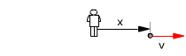 | t = 1 s x = 14.2 cm v = 3.54 π cm/s |
Ecuaciones del movimiento:
| $$\left.\begin{aligned}&x=A\operatorname{sen}(\omega\,t)\\[4pt]&v=A\,\omega\cos(\omega\,t)\\[4pt]&a=-A\,\omega^2\operatorname{sen}(\omega\,t)\end{aligned}\right\}$$ |
Parámetros Parámetros A = 20 cm, ω = π/4 rad/s (T = 2π/ω = 8 s) φ = 0 |
Aplicación:
Datos: a4 = 1.08π2 cm/s2, Incógnitas: t4
$$\begin{aligned}&a_4=-A\,\omega^2\operatorname{sen}(\omega\,t_4)\\[6pt] &\omega\,t_4=\operatorname{asen}\left(\frac{a_4}{-A\,\omega^2}\right)=\operatorname{asen}\left(\frac{1{,}08\pi^2\ \mathrm{cm/s^2}}{-20\ \mathrm{cm}\,(\pi/4\ \mathrm{rad/s})^2}\right)\;\rightarrow\;\frac{\pi}{4}\ \mathrm{\frac{rad}{s}}\;t_4=\htmlData{pc-ac=ac4}{\boxed{\left\{\begin{aligned}&1{,}33\pi+k\,2\pi\\[2pt]&1{,}67\pi+k\,2\pi\end{aligned}\right.}}\\[6pt] &\left\{\begin{aligned}&t_4=\frac{(1{,}33\pi+k\,2\pi)\ \mathrm{rad}}{\pi/4\ \mathrm{rad/s}}=(5{,}32+k\cdot8)\ \mathrm{s}\\[2pt]&t_4=\frac{(1{,}67\pi+k\,2\pi)\ \mathrm{rad}}{\pi/4\ \mathrm{rad/s}}=(6{,}68+k\cdot8)\ \mathrm{s}\end{aligned}\right.\end{aligned}$$
Se obtienen dos series de valores del tiempo separados por el valor del período (8 s)
$$t_4=(5{,}32+k\,8)\ \mathrm{s}\;\rightarrow\;\left\{\begin{aligned}&k=0\quad t_4=5{,}32\ \mathrm{s}\\[2pt]&k=1\quad t_4=13{,}3\ \mathrm{s}\\[2pt]&\ldots\ldots\end{aligned}\right.\qquad t_4=(6{,}68+k\,8)\ \mathrm{s}\;\rightarrow\;\left\{\begin{aligned}&k=0\quad t_4=6{,}68\ \mathrm{s}\\[2pt]&k=1\quad t_4=14{,}7\ \mathrm{s}\\[2pt]&\ldots\ldots\end{aligned}\right.$$
La primera serie de tiempos corresponde a una fase 1.33π:
el móvil estará a la izquierda del observador moviéndose
hacia la izquierda frenando (a = 1.08π2 cm/s2)
La segunda serie de tiempos corresponde a una fase 1.67π: el móvil
estará a la izquierda del observador moviéndose hacia la
derecha acelerando (a = 1.08π2 cm/s2)
En cada oscilación, el móvil tiene dos veces la misma aceleración y las velocidades correspondientes son iguales y contrarias (En un caso irá frenando y en el otro acelerando).
Vamos a obtener algunos valores del tiempo y ordenarlos: t4 = 5,32, 6,68, 13,3, 14,7,...s
|
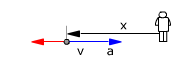 | t = 5.32 s x = -17.2 m v = -8 cm/s |
2La ecuación de posición
de un m.a.s es: x = 15 sen(2πt + π/2) (x: cm, t: s). Determina:
a)
Situación inicial
b) Velocidad
cuando la elongación sea 5 cm
c) Elongación
cuando la velocidad es de 70 cm/s
d) Aceleración
cuando la elongación es 10 cm
e) Aceleración
cuando la velocidad sea 30 cm/s
Solución
Ecuaciones del movimiento:
| $$\left.\begin{aligned}&x=A\operatorname{sen}(\omega\,t+\varphi_0)\\[4pt]&v=A\,\omega\cos(\omega\,t+\varphi_0)\\[4pt]&a=-A\,\omega^2\operatorname{sen}(\omega\,t+\varphi_0)\end{aligned}\right\}$$ |
Parámetros: A = 15 cm, ω = 2π rad/s (T = 2π/ω= 1 s) φ0 = π/2 rd |
Aplicación: (Situación inicial)
Datos: t = 0, Incógnitas: x0, v0, a0
$$\left.\begin{aligned}&x_0=A\operatorname{sen}(\omega\cdot0+\varphi_0)\\[4pt]&v_0=A\,\omega\cos(\omega\cdot0+\varphi_0)\\[4pt]&a_0=-A\,\omega^2\operatorname{sen}(\omega\cdot0+\varphi_0)\end{aligned}\right\}$$
| $$\begin{aligned}&x_0=15\ \mathrm{cm}\operatorname{sen}\left(\frac{\pi}{2}\ \mathrm{rad}\right)=15\ \mathrm{cm}\\[6pt] &v_0=15\ \mathrm{cm}\;\pi\ \mathrm{\frac{rad}{s}}\cos\left(\frac{\pi}{2}\ \mathrm{rad}\right)=0\\[6pt] &a_0=-15\ \mathrm{cm}\left(2\pi\ \mathrm{\frac{rad}{s}}\right)^2\operatorname{sen}\left(\frac{\pi}{2}\ \mathrm{rad}\right)=-592\ \mathrm{\frac{cm}{s^2}}\end{aligned}$$ |
 |
Inicialmente el móvil está quieto en el extremo derecho de la trayectoria y tiene aceleración hacia la izquierda lo que significa que en el siguiente instante estará moviéndose hacia la izquierda
Ecuaciones del movimiento
| $$\left.\begin{aligned}&x=A\operatorname{sen}(\omega\,t+\varphi_0)\\[4pt]&v=A\,\omega\cos(\omega\,t+\varphi_0)\\[4pt]&a=-A\,\omega^2\operatorname{sen}(\omega\,t+\varphi_0)\end{aligned}\right\}$$ |
Parámetros: A = 15 cm, ω = 2π rad/s (T = 2π/ω= 1 s) φ0 = π/2 rad |
Aplicación:
Datos: x1 = 5 cm, Incógnitas: t1, v1
$$\begin{aligned}&\left.\begin{aligned}&x_1=A\operatorname{sen}(\omega\,t_1+\varphi_0)\\[4pt]&v_1=A\,\omega\cos(\omega\,t_1+\varphi_0)\end{aligned}\right\}\;\rightarrow\;\htmlData{pc-ac=ac6}{\boxed{v_1=A\,\omega\sqrt{1-\left(\frac{x_1}{A}\right)^2}}}\\[6pt] &v_1=15\ \mathrm{cm}\;2\pi\ \mathrm{\frac{rad}{s}}\sqrt{1-\left(\frac{5\ \mathrm{cm}}{15\ \mathrm{cm}}\right)^2}=\pm88{,}9\ \mathrm{\frac{cm}{s}}\end{aligned}$$
En cada posición se tienen dos velocidades iguales y contrarias (Excepto en cada uno de los extremos donde está una sola vez con velocidad 0)
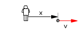 |
x = 5 cm v = 88,9 cm/s |
Ecuaciones del movimiento
| $$\left.\begin{aligned}&x=A\operatorname{sen}(\omega\,t+\varphi_0)\\[4pt]&v=A\,\omega\cos(\omega\,t+\varphi_0)\\[4pt]&a=-A\,\omega^2\operatorname{sen}(\omega\,t+\varphi_0)\end{aligned}\right\}$$ |
Parámetros: A = 15 cm, ω = 2π rad/s (T = 2π/ω= 1 s) φ0 = π/2 rd |
Aplicación:
Datos: v2 = 70 cm/s, Incógnitas: t2, x2
$$\begin{aligned}&\left.\begin{aligned}&x_2=A\operatorname{sen}(\omega\,t_2+\varphi_0)\\[4pt]&v_2=A\,\omega\cos(\omega\,t_2+\varphi_0)\end{aligned}\right\}\;\rightarrow\;\htmlData{pc-ac=ac7}{\boxed{x_2=A\sqrt{1-\left(\frac{v_2}{A\,\omega}\right)^2}}}\\[6pt] &x_2=15\ \mathrm{cm}\sqrt{1-\left(\frac{70\ \mathrm{cm/s}}{15\ \mathrm{cm}\;2\pi\ \mathrm{rad/s}}\right)^2}=\pm10{,}0\ \mathrm{cm}\end{aligned}$$
Cada velocidad se tiene en dos posiciones simétricas respecto al origen (Excepto la velocidad máxima de ida o vuelta que sólo se tiene en el origen).
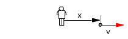 |
x = 10 cm v = 70 cm/s |
Ecuaciones del movimiento
| $$\left.\begin{aligned}&x=A\operatorname{sen}(\omega\,t+\varphi_0)\\[4pt]&v=A\,\omega\cos(\omega\,t+\varphi_0)\\[4pt]&a=-A\,\omega^2\operatorname{sen}(\omega\,t+\varphi_0)\end{aligned}\right\}$$ |
Parámetros: A = 15 cm, ω = 2π rad/s (T = 2π/ω= 1 s) φ0 = π/2 rd |
Aplicación:
Datos: x3 = 10 cm, Incógnitas: t3, a3
$$\begin{aligned}&\left.\begin{aligned}&x_3=A\operatorname{sen}(\omega\,t_3+\varphi_0)\\[4pt]&a_3=-A\,\omega^2\operatorname{sen}(\omega\,t_3+\varphi_0)\end{aligned}\right\}\;\rightarrow\;a_3=-\omega^2\,x_3\\[6pt] &a_3=-\left(2\pi\ \mathrm{\frac{rad}{s}}\right)^2\;10\ \mathrm{cm}=-395\ \mathrm{\frac{cm}{s^2}}\end{aligned}$$
| A cada posición le corresponde una única aceleración. |
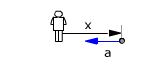 |
Ecuaciones del movimiento
| $$\left.\begin{aligned}&x=A\operatorname{sen}(\omega\,t+\varphi_0)\\[4pt]&v=A\,\omega\cos(\omega\,t+\varphi_0)\\[4pt]&a=-A\,\omega^2\operatorname{sen}(\omega\,t+\varphi_0)\end{aligned}\right\}$$ |
Parámetros: A = 15 cm, ω = 2π rad/s (T = 2π/ω= 1 s) φ0 = π/2 rd |
Aplicación:
Datos: v4 = 30 cm/s, Incógnitas: t4, a4
$$\begin{aligned}&\left.\begin{aligned}&v_4=A\,\omega\cos(\omega\,t_4+\varphi_0)\\[4pt]&a_4=-A\,\omega^2\operatorname{sen}(\omega\,t_4+\varphi_0)\end{aligned}\right\}\;\rightarrow\;\htmlData{pc-ac=ac8}{\boxed{a_4=A\,\omega^2\sqrt{1-\left(\frac{v_4}{A\,\omega}\right)^2}}}\\[6pt] &a_4=15\ \mathrm{cm}\left(2\pi\ \mathrm{\frac{rad}{s}}\right)^2\sqrt{1-\left(\frac{30\ \mathrm{cm/s}}{15\ \mathrm{cm}\;2\pi\ \mathrm{rad/s}}\right)^2}=\pm561\ \mathrm{\frac{cm}{s^2}}\end{aligned}$$
A cada velocidad le corresponden dos aceleraciones iguales y contrarias (Excepto a la velocidad máxima de ida o de vuelta que le corresponde acleración 0)
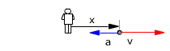 |
v = 30 cm/s a = -561 cm/s2 |
3La ecuación de posición
de un m.a.s es: x = 20 sen(πt +7π / 4) (x: cm, t: s) Calcula:
a)
Cuando estará en los extremos de su trayectoria
b) Elongación
cuando su velocidad sea máxima
c) Velocidad
cuando su aceleración sea máxima
Solución
a) |
|
|
Ecuaciones del movimiento:
| $$\left.\begin{aligned}&x=A\operatorname{sen}(\omega\,t+\varphi_0)\\[4pt]&v=A\,\omega\cos(\omega\,t+\varphi_0)\\[4pt]&a=-A\,\omega^2\operatorname{sen}(\omega\,t+\varphi_0)\end{aligned}\right\}$$ |
Parámetros A = 20 cm, ω = π rad/s (T = 2π/ω = 2 s) φ0 = 7π/4 rad |
Datos: x1 = A , Incógnita: t1
$$\begin{aligned}&x_1=A\operatorname{sen}(\omega\,t_1+\varphi_0)\\[6pt] &\omega\,t_1+\varphi_0=\operatorname{asen}\left(\frac{A}{A}\right)=\operatorname{asen}\left(\frac{20\ \mathrm{cm}}{20\ \mathrm{cm}}\right)\;\rightarrow\;\pi\ \mathrm{\frac{rad}{s}}\;t_1+\frac{7\pi}{4}\ \mathrm{rad}=\left(\frac{\pi}{2}+k\,2\pi\right)\ \mathrm{rad}\\[6pt] &t_1=\frac{(\pi/2-7\pi/4+k\,2\pi)\ \mathrm{rad}}{\pi\ \mathrm{rad/s}}=(-1{,}25+k\,2)\ \mathrm{s}\end{aligned}$$
Se obtiene una única serie de valores, separados por el valor del período (2 s) porque, en el extremo, el móvil tiene una única velocidad: 0
$$t_1=(-1{,}25+k\,2)\ \mathrm{s}\;\rightarrow\;\left\{\begin{aligned}&k=0\quad t_1=\htmlData{pc-ac=ac9}{\boxed{-1{,}25\quad\text{No}}}\\[2pt]&k=1\quad t_1=0{,}75\ \mathrm{s}\\[2pt]&k=2\quad t_1=2{,}75\ \mathrm{s}\\[2pt]&\ldots\ldots\end{aligned}\right.$$
La serie de tiempos corresponde a una fase 0.5π: el móvil estará inmóvil en el extremo derecho del recorrido (x = 20 cm), excepto en la primera oscilación
Valores del tiempo: t1 = 0,75 s, 2,75,... s
|
|
Ecuaciones del movimiento:
| $$\left.\begin{aligned}&x=A\operatorname{sen}(\omega\,t+\varphi_0)\\[4pt]&v=A\,\omega\cos(\omega\,t+\varphi_0)\\[4pt]&a=-A\,\omega^2\operatorname{sen}(\omega\,t+\varphi_0)\end{aligned}\right\}$$ |
Parámetros A = 20 cm, ω = π rad/s (T = 2π/ω = 2 s) φ0 = 7π/4 rad |
Datos: x2 = -A , Incógnita: t2
$$\begin{aligned}&x_2=A\operatorname{sen}(\omega\,t_2+\varphi_0)\\[6pt] &\omega\,t_2+\varphi_0=\operatorname{asen}\left(\frac{A}{A}\right)=\operatorname{asen}\left(\frac{-20\ \mathrm{cm}}{20\ \mathrm{cm}}\right)\;\rightarrow\;\pi\ \mathrm{\frac{rad}{s}}\;t_2+\frac{7\pi}{4}\ \mathrm{rad}=\left(\frac{3\pi}{2}+k\,2\pi\right)\ \mathrm{rad}\\[6pt] &t_2=\frac{(3\pi/2-7\pi/4+k\,2\pi)\ \mathrm{rad}}{\pi\ \mathrm{rad/s}}=(-0{,}25+k\,2)\ \mathrm{s}\end{aligned}$$
Se obtiene una única serie de valores, separados por el valor del período (2 s) porque, en el extremo, el móvil tiene una única velocidad: 0
$$t_2=(-0{,}25+k\,2)\ \mathrm{s}\;\rightarrow\;\left\{\begin{aligned}&k=0\quad t_2=\htmlData{pc-ac=ac10}{\boxed{-0{,}25\quad\text{No}}}\\[2pt]&k=1\quad t_2=1{,}75\ \mathrm{s}\\[2pt]&k=2\quad t_2=3{,}75\ \mathrm{s}\\[2pt]&\ldots\ldots\end{aligned}\right.$$
La serie de tiempos corresponde a una fase 1.5π: el móvil estará inmóvil en el extremo izquierdo del recorrido (x = -20 cm), excepto en la primera oscilación
Valores del tiempo: t1 = 1,75 s, 3,75,... s
Ecuaciones del movimiento
| $$\left.\begin{aligned}&x=A\operatorname{sen}(\omega\,t+\varphi_0)\\[4pt]&v=A\,\omega\cos(\omega\,t+\varphi_0)\\[4pt]&a=-A\,\omega^2\operatorname{sen}(\omega\,t+\varphi_0)\end{aligned}\right\}$$ |
Parámetros A = 20 cm, ω = π rad/s (T = 2π/ω = 2 s) φ0 = 7π/4 rad |
La velocidad máxima será ±Aω (Puede ir hacia la derecha o hacia la izquierda)
Aplicación:
Datos: v3 = ±Aω , Incógnitas: t3, x3
$$\begin{aligned}&\left.\begin{aligned}&x_3=A\operatorname{sen}(\omega\,t_3+\varphi_0)\\[4pt]&v_3=A\,\omega\cos(\omega\,t_3+\varphi_0)\end{aligned}\right\}\;\rightarrow\;\htmlData{pc-ac=ac7}{\boxed{x_3=A\sqrt{1-\left(\frac{v_3}{A\,\omega}\right)^2}}}\\[6pt] &x_3=A\sqrt{1-\left(\frac{\pm A\,\omega}{A\,\omega}\right)^2}=0\end{aligned}$$
La velocidad máxima se alcanza al pasar por el origen
Ecuaciones del movimiento
| $$\left.\begin{aligned}&x=A\operatorname{sen}(\omega\,t+\varphi_0)\\[4pt]&v=A\,\omega\cos(\omega\,t+\varphi_0)\\[4pt]&a=-A\,\omega^2\operatorname{sen}(\omega\,t+\varphi_0)\end{aligned}\right\}$$ |
Parámetros A = 20 cm, ω = π rad/s (T = 2π/ω = 2 s) φ0 = 7π/4 rad |
La aceleración máxima será ±Aω2 (Puede ir hacia la derecha o hacia la izquierda)
Aplicación:
Datos: a3 = ±Aω2, Incógnitas: t3, v3
$$\begin{aligned}&\left.\begin{aligned}&v_4=A\,\omega\cos(\omega\,t_4+\varphi_0)\\[4pt]&a_4=-A\,\omega^2\operatorname{sen}(\omega\,t_4+\varphi_0)\end{aligned}\right\}\;\rightarrow\;\htmlData{pc-ac=ac11}{\boxed{v_4=A\,\omega\sqrt{1-\left(\frac{a}{A\,\omega^2}\right)^2}}}\\[6pt] &v_4=A\,\omega\sqrt{1-\left(\frac{\pm A\,\omega^2}{A\,\omega^2}\right)^2}=0\end{aligned}$$
Cuando la aceleración es máxima la velocidad es nula (Ocurre en los extremos)
4La ecuación de posición
de un m.a.s es: x = A sen(2πt/T +π/2). Determina cuanto tarda en
ir:
a) Del
extremo derecho a la posición x = A/2
b) De la posición x = A/2 al centro
c) Del centro a la posición x = -A/2
d) De la posición x = -A/2
al extremo izquierdo
Solución
Ecuación del movimiento:
|
$$x=A\operatorname{sen}(\omega\,t+\varphi_0)$$ |
Parámetros: ω = 2π/T, φ0 = π/2 |
Calculamos cuando está el móvil en cada una de las posiciones:
x1 = A |
$$x_1=A\operatorname{sen}(\omega\,t_1+\varphi_0)\;\rightarrow\;\htmlData{pc-ac=ac12}{\boxed{t_1=0,\;T,\;2T,\;3T,\ldots}}$$ |
x2 = A/2 |
$$x_2=A\operatorname{sen}(\omega\,t_2+\varphi_0)\;\rightarrow\;\htmlData{pc-ac=ac13}{\boxed{t_2=\frac{T}{6},\;\frac{5T}{6},\;\frac{7T}{6},\;\frac{11T}{6},\ldots}}$$ |
x3 = 0 |
$$x_3=A\operatorname{sen}(\omega\,t_3+\varphi_0)\;\rightarrow\;\htmlData{pc-ac=ac14}{\boxed{t_3=\frac{T}{4},\;\frac{3T}{4},\;\frac{5T}{4},\;\frac{7T}{4},\ldots}}$$ |
x4 = -A/2 |
$$x_4=A\operatorname{sen}(\omega\,t_4+\varphi_0)\;\rightarrow\;\htmlData{pc-ac=ac15}{\boxed{t_4=\frac{T}{3},\;\frac{2T}{3},\;\frac{4T}{3},\;\frac{5T}{3},\ldots}}$$ |
x5 = -A |
$$x_5=A\operatorname{sen}(\omega\,t_5+\varphi_0)\;\rightarrow\;\htmlData{pc-ac=ac16}{\boxed{t_5=\frac{T}{2},\;\frac{3T}{2},\;\frac{5T}{2},\;\frac{7T}{2},\ldots}}$$ |
El tiempo que tarda el móvil en ir de un punto a otro se obtendrá restando los valores del tiempo cuando el móvil pasa por ellos por primera vez yendo en el mismo sentido
Sentido: Negativo |
Origen |
Destino |
Tiempo en el recorrido |
x = A |
x = A / 2 |
Δt = T / 6 - 0 = T / 6 |
|
x = A / 2 |
x = 0 |
Δt = T / 4 - T / 6 = T / 12 |
|
x = 0 |
x = -A / 2 |
Δt = 2·T / 6 - T / 4 = T / 12 |
|
x = -A / 2 |
x = -A |
Δt = T / 2 - 2·T / 6 = T / 6 |
Sentido: Positivo |
x = -A |
x = -A / 2 |
Δt = 4·T / 6 - T / 2 = T / 6 |
x = -A / 2 |
x = 0 |
Δt = 3·T / 4 - 4·T / 6 = T / 12 |
|
x = 0 |
x = A / 2 |
Δt = 5·T / 6 - 3·T / 4 = T / 12 |
|
x = A / 2 |
x = A |
Δt = T - 5·T / 6 = T / 6 |
Resumen de los resultados:
Para un mismo recorrido se tarda lo mismo en ir que en volver
Se tarda el mismo tiempo en hacer recorridos simétricos respecto al origen
Desde cada extremo al centro se tarda T/4 y de extremo a extremo se tarda T/2
En recorrer la primera mitad de la amplitud se tarda la mitad de lo que se tarda en recorrer la segunda mitad de la amplitud

5La ecuación de posición
de un m.a.s es: x = 10 sen(πt+π/4) (x: cm, t: s). Determina:
a)
Elongación, velocidad y aceleración en los instantes
t =0, 0.25, 0.75, 1 s
b)
Cuando pasará por el origen
c)
Cuando la velocidad será de -5π cm/s
d) Cuando
la aceleración será -5π2 cm/s2
Solución
Ecuaciones del movimiento
| $$\left.\begin{aligned}&x=A\operatorname{sen}(\omega\,t+\varphi_0)\\[4pt]&v=A\,\omega\cos(\omega\,t+\varphi_0)\\[4pt]&a=-A\,\omega^2\operatorname{sen}(\omega\,t+\varphi_0)\end{aligned}\right\}$$ |
Parámetros: A = 10 cm, ω = π rad/s (T = 2π/ω= 2 s) φ0 = π/4 rad |
Aplicación
Datos: t1, Incógnitas: x1, v1, a1
$$\left.\begin{aligned}&x_1=A\operatorname{sen}(\omega\,t_1+\varphi_0)\\[4pt]&v_1=A\,\omega\cos(\omega\,t_1+\varphi_0)\\[4pt]&a_1=-A\,\omega^2\operatorname{sen}(\omega\,t_1+\varphi_0)\end{aligned}\right\}$$
Sustituyendo los valores del tiempo resulta:
| $$\begin{aligned}&x_1=10\ \mathrm{cm}\operatorname{sen}\left(\pi\ \mathrm{\frac{rad}{s}}\;0+\frac{\pi}{4}\ \mathrm{rad}\right)=7{,}07\ \mathrm{cm}\\[6pt] &v_1=10\ \mathrm{cm}\;\pi\ \mathrm{\frac{rad}{s}}\cos\left(\pi\ \mathrm{\frac{rad}{s}}\;0+\frac{\pi}{4}\ \mathrm{rad}\right)=22{,}2\ \mathrm{\frac{cm}{s}}\\[6pt] &a_1=-10\ \mathrm{cm}\left(\pi\ \mathrm{\frac{rad}{s}}\right)^2\operatorname{sen}\left(\pi\ \mathrm{\frac{rad}{s}}\;0+\frac{\pi}{4}\ \mathrm{rad}\right)=-69{,}8\ \mathrm{\frac{cm}{s^2}}\end{aligned}$$ |
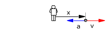 |
|
| Está a la derecha del observador yendo hacia la derecha y frenando |
||
Ecuaciones del movimiento
| $$\left.\begin{aligned}&x=A\operatorname{sen}(\omega\,t+\varphi_0)\\[4pt]&v=A\,\omega\cos(\omega\,t+\varphi_0)\\[4pt]&a=-A\,\omega^2\operatorname{sen}(\omega\,t+\varphi_0)\end{aligned}\right\}$$ |
Parámetros: A = 10 cm, ω = π rad/s (T = 2π/ω= 2 s) φ0 = π/4 rad |
Aplicación:
Datos: x2 = 0 cm, Incógnitas: t2
$$\begin{aligned}&0=A\operatorname{sen}(\omega\,t_2+\varphi_0)\\[6pt] &\omega\,t_2+\varphi_0=\operatorname{asen}\left(\frac{0}{A}\right)\;\rightarrow\;\pi\ \mathrm{\frac{rad}{s}}\;t_2+\frac{\pi}{4}\ \mathrm{rad}=\htmlData{pc-ac=ac4}{\boxed{\left\{\begin{aligned}&(0+k\,2\pi)\ \mathrm{rad}\\[2pt]&(\pi+k\,2\pi)\ \mathrm{rad}\end{aligned}\right.}}\\[6pt] &\left\{\begin{aligned}&t_2=\frac{(-\pi/4+k\,2\pi)\ \mathrm{rad}}{\pi\ \mathrm{rad/s}}=(-0{,}25+k\,2)\ \mathrm{s}\\[2pt]&t_2=\frac{(\pi-\pi/4+k\,2\pi)\ \mathrm{rad}}{\pi\ \mathrm{rad/s}}=(0{,}75+k\,2)\ \mathrm{s}\end{aligned}\right.\end{aligned}$$
Se obtienen dos series de infinitos valores del tiempo separados por el valor del período (2 s)
$$t_2=(-0{,}25+k\,2)\ \mathrm{s}\;\rightarrow\;\left\{\begin{aligned}&k=0\quad t_2=\htmlData{pc-ac=ac17}{\boxed{-0{,}25\quad\text{No}}}\\[2pt]&k=1\quad t_2=1{,}75\ \mathrm{s}\\[2pt]&k=2\quad t_2=3{,}75\ \mathrm{s}\\[2pt]&\ldots\ldots\end{aligned}\right.\qquad t_2=(0{,}75+k\,2)\ \mathrm{s}\;\rightarrow\;\left\{\begin{aligned}&k=0\quad t_2=0{,}75\ \mathrm{s}\\[2pt]&k=1\quad t_2=2{,}75\ \mathrm{s}\\[2pt]&\ldots\ldots\end{aligned}\right.$$
La primera serie de tiempos corresponde a una fase 0: el móvil estará junto al observador moviéndose hacia la derecha, excepto en la primera oscilación
La segunda serie de tiempos corresponde a una fase π: el móvil estará junto al observador movién-dose hacia la izquierda
En cada oscilación, el móvil pasa dos veces por cada posición y lo hace con velocidades iguales y opuestas (Excepto en cada uno de los extremos donde la única velocidad es 0).
Valores del tiempo ordenados: t2 = 0,75, 1,75, 2,75, 3,75,...s
 | t = 0.75 s x = 0 v = -31.4 m/s |
||

Ecuaciones del movimiento
| $$\left.\begin{aligned}&x=A\operatorname{sen}(\omega\,t+\varphi_0)\\[4pt]&v=A\,\omega\cos(\omega\,t+\varphi_0)\\[4pt]&a=-A\,\omega^2\operatorname{sen}(\omega\,t+\varphi_0)\end{aligned}\right\}$$ |
Parámetros: A = 10 cm, ω = π rad/s (T = 2π/ω= 2 s) φ0 = π/4 rad |
Aplicación:
Datos: v3 = -5π cm/s, Incógnitas: t3
$$\begin{aligned}&v_3=A\,\omega\cos(\omega\,t_3+\varphi_0)\\[6pt] &\omega\,t_3+\varphi_0=\operatorname{acos}\left(\frac{v_3}{A\,\omega}\right)=\operatorname{acos}\left(\frac{-5\pi\ \mathrm{cm/s}}{10\ \mathrm{cm}\;\pi\ \mathrm{rad/s}}\right)\;\rightarrow\;\pi\ \mathrm{\frac{rad}{s}}\;t_3+\frac{\pi}{4}\ \mathrm{rad}=\htmlData{pc-ac=ac5}{\boxed{\left\{\begin{aligned}&(0{,}67\pi+k\,2\pi)\ \mathrm{rad}\\[2pt]&(1{,}33\pi+k\,2\pi)\ \mathrm{rad}\end{aligned}\right.}}\\[6pt] &\left\{\begin{aligned}&t_3=\frac{(0{,}67\pi-\pi/4+k\,2\pi)\ \mathrm{rad}}{\pi\ \mathrm{rad/s}}=(0{,}42+k\,2)\ \mathrm{s}\\[2pt]&t_3=\frac{(1{,}33\pi-\pi/4+k\,2\pi)\ \mathrm{rad}}{\pi\ \mathrm{rad/s}}=(1{,}08+k\,2)\ \mathrm{s}\end{aligned}\right.\end{aligned}$$
Se obtienen dos series de infinitos valores del tiempo separados por el valor del período (2 s)
$$t_3=(0{,}42+k\,2)\ \mathrm{s}\;\rightarrow\;\left\{\begin{aligned}&k=0\quad t_3=0{,}42\ \mathrm{s}\\[2pt]&k=1\quad t_3=2{,}42\ \mathrm{s}\\[2pt]&\ldots\ldots\end{aligned}\right.\qquad t_3=(1{,}08+k\,2)\ \mathrm{s}\;\rightarrow\;\left\{\begin{aligned}&k=0\quad t_3=1{,}08\ \mathrm{s}\\[2pt]&k=1\quad t_3=3{,}08\ \mathrm{s}\\[2pt]&\ldots\ldots\end{aligned}\right.$$
La primera serie de tiempos corresponde a una fase 0.67π: el móvil estará a la derecha del observa-dor moviéndose hacia la izquierda
La segunda serie de tiempos corresponde a una fase 1.33π: el móvil estará a la izquierda del obser-vador moviéndose hacia la izquierda
En cada oscilación, el móvil tiene dos veces la misma velocidad y las posiciones correspondientes son simetricas respecto al origen (Excepto la velocidad máxima de ida o vuelta que sólo se tiene en una posición: el origen)
Valores del tiempo ordenardos: t3 = 0,42, 1,08, 2,42, 3,08,...s
|
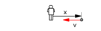 | t = 0.42 s x = 8.66 cm v = -5π cm/s |
Ecuaciones del movimiento:
| $$\left.\begin{aligned}&x=A\operatorname{sen}(\omega\,t+\varphi_0)\\[4pt]&v=A\,\omega\cos(\omega\,t+\varphi_0)\\[4pt]&a=-A\,\omega^2\operatorname{sen}(\omega\,t+\varphi_0)\end{aligned}\right\}$$ |
Parámetros: A = 10 cm, ω = π rad/s (T = 2π/ω= 2 s) φ0 = π/4 rad |
Aplicación:
Datos: a4 = -5π2 cm/s2, Incógnitas: t4
$$\begin{aligned}&a_4=-A\,\omega^2\operatorname{sen}(\omega\,t_4+\varphi_0)\\[6pt] &\omega\,t_4+\varphi_0=\operatorname{asen}\left(\frac{a_4}{-A\,\omega^2}\right)=\operatorname{asen}\left(\frac{-5\pi^2\ \mathrm{cm/s^2}}{-10\ \mathrm{cm}\;\pi\ \mathrm{rad/s^2}}\right)\;\rightarrow\;\pi\ \mathrm{\frac{rad}{s}}\;t_4+\frac{\pi}{4}\ \mathrm{rad}=\htmlData{pc-ac=ac4}{\boxed{\left\{\begin{aligned}&(0{,}167\pi+k\,2\pi)\ \mathrm{rad}\\[2pt]&(0{,}833\pi+k\,2\pi)\ \mathrm{rad}\end{aligned}\right.}}\\[6pt] &\left\{\begin{aligned}&t_4=\frac{(0{,}167\pi-\pi/4+k\,2\pi)\ \mathrm{rad}}{\pi\ \mathrm{rad/s}}=(-0{,}083+k\,2)\ \mathrm{s}\\[2pt]&t_4=\frac{(0{,}833\pi-\pi/4+k\,2\pi)\ \mathrm{rad}}{\pi\ \mathrm{rad/s}}=(0{,}583+k\,2)\ \mathrm{s}\end{aligned}\right.\end{aligned}$$
Se obtienen dos series de valores del tiempo separados por el valor del período (2 s)
$$t_4=(-0{,}083+k\,2)\ \mathrm{s}\;\rightarrow\;\left\{\begin{aligned}&k=0\quad t_4=\htmlData{pc-ac=ac18}{\boxed{-0{,}083\ \mathrm{s}\quad\text{No}}}\\[2pt]&k=1\quad t_4=2{,}92\ \mathrm{s}\\[2pt]&k=2\quad t_4=4{,}92\ \mathrm{s}\\[2pt]&\ldots\ldots\end{aligned}\right.\qquad t_4=(0{,}583+k\,2)\ \mathrm{s}\;\rightarrow\;\left\{\begin{aligned}&k=0\quad t_4=0{,}583\ \mathrm{s}\\[2pt]&k=1\quad t_4=2{,}58\ \mathrm{s}\\[2pt]&\ldots\ldots\end{aligned}\right.$$
La primera serie de tiempos corresponde a una fase 0.167π: el móvil estará a la derecha del observa-dor moviéndose hacia la derecha frenando (a = -5π2 cm/s2), excepto en la primera oscilación
La segunda serie de tiempos corresponde a una fase 0.833π: el móvil estará a la derecha del obser-vador moviéndose hacia la izquierda acelerando (a = -5π2 cm/s2)
En cada oscilación, el móvil tiene dos veces la misma aceleración y las velocidades correspondientes son iguales y contrarias (En un caso irá frenando y en el otro acelerando).
Valores del tiempo ordenados: t4 = 0,92, 1,58, 2,92, 3,58,...s
t = 0,92 s x = 5 cm v = -27.2 cm/s |
6La ecuación de posición
de un m.a.s es: x = 25 sen(πt/6 + 3π/2) (x: cm, t: s). Determina:
a)
Situación inicial
b) Elongación
cuando la velocidad sea 8 cm/s
c) Velocidad
cuando la aceleración sea 2 cm/s2
d) Elongación
cuando la aceleración sea 6.85 cm/s2
Solución
Ecuaciones del movimiento
| $$\left.\begin{aligned}&x=A\operatorname{sen}(\omega\,t+\varphi_0)\\[4pt]&v=A\,\omega\cos(\omega\,t+\varphi_0)\\[4pt]&a=-A\,\omega^2\operatorname{sen}(\omega\,t+\varphi_0)\end{aligned}\right\}$$ |
Parámetros: A = 25 cm, ω = π/6 rad/s (T = 2π/ω = 12 s) φ0 = 3π/2 rad |
Aplicación: (Situación inicial)
Datos: t = 0, Incógnitas: x0, v0, a0
$$\begin{aligned}&\left.\begin{aligned}&x_0=A\operatorname{sen}(\omega\cdot0+\varphi_0)\\[4pt]&v_0=A\,\omega\cos(\omega\cdot0+\varphi_0)\\[4pt]&a_0=-A\,\omega^2\operatorname{sen}(\omega\cdot0+\varphi_0)\end{aligned}\right\}\\[6pt] &x_0=25\ \mathrm{cm}\operatorname{sen}\left(\frac{3\pi}{2}\ \mathrm{rad}\right)=-25\ \mathrm{cm}\\[6pt] &v_0=25\ \mathrm{cm}\;\frac{\pi}{6}\ \mathrm{\frac{rad}{s}}\cos\left(\frac{3\pi}{2}\ \mathrm{rad}\right)=0\\[6pt] &a_0=-25\ \mathrm{cm}\left(\frac{\pi}{6}\ \mathrm{\frac{rad}{s}}\right)^2\operatorname{sen}\left(\frac{3\pi}{2}\ \mathrm{rad}\right)=6{,}85\ \mathrm{\frac{cm}{s^2}}\end{aligned}$$
| Está quieto en el extremo izquierdo de la trayectoria y tiene aceleración hacia la derecha lo que significa que en el siguiente instante estará moviéndose hacia la derecha |
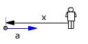 |
Ecuaciones del movimiento
| $$\left.\begin{aligned}&x=A\operatorname{sen}(\omega\,t+\varphi_0)\\[4pt]&v=A\,\omega\cos(\omega\,t+\varphi_0)\\[4pt]&a=-A\,\omega^2\operatorname{sen}(\omega\,t+\varphi_0)\end{aligned}\right\}$$ |
Parámetros: A = 25 cm, ω = π/6 rad/s (T = 2π/ω = 12 s) φ0 = 3π/2 rad |
Aplicación:
Datos: v1 = 8 cm/s, Incógnitas: t1, x1
$$\begin{aligned}&\left.\begin{aligned}&x_1=A\operatorname{sen}(\omega\,t_1+\varphi_0)\\[4pt]&v_1=A\,\omega\cos(\omega\,t_1+\varphi_0)\end{aligned}\right\}\;\rightarrow\;\htmlData{pc-ac=ac7}{\boxed{x_1=A\sqrt{1-\left(\frac{v_1}{A\,\omega}\right)^2}}}\\[6pt] &x_1=25\ \mathrm{cm}\sqrt{1-\left(\frac{8\ \mathrm{cm/s}}{25\ \mathrm{cm}\;\pi/6\ \mathrm{rad/s}}\right)^2}=\pm19{,}8\ \mathrm{cm}\end{aligned}$$
En cada oscilación, el móvil tiene dos veces la misma velocidad y las posiciones correspondientes son simetricas respecto al origen (Excepto la velocidad máxima de ida o vuelta que sólo se tiene en una posición: el origen)
 | x = 19.8 cm v = 8 cm/s |

Ecuaciones del movimiento
| $$\left.\begin{aligned}&x=A\operatorname{sen}(\omega\,t+\varphi_0)\\[4pt]&v=A\,\omega\cos(\omega\,t+\varphi_0)\\[4pt]&a=-A\,\omega^2\operatorname{sen}(\omega\,t+\varphi_0)\end{aligned}\right\}$$ |
Parámetros: A = 25 cm, ω = π/6 rad/s (T = 2π/ω = 12 s) φ0 = 3π/2 rad |
Aplicación:
Datos: a2 = 2 cm/s2, Incógnitas: t2, v2
$$\begin{aligned}&\left.\begin{aligned}&v_2=A\,\omega\cos(\omega\,t_2+\varphi_0)\\[4pt]&a_2=-A\,\omega^2\operatorname{sen}(\omega\,t_2+\varphi_0)\end{aligned}\right\}\;\rightarrow\;\htmlData{pc-ac=ac11}{\boxed{v=A\,\omega\sqrt{1-\left(\frac{a}{A\,\omega^2}\right)^2}}}\\[6pt] &v=25\ \mathrm{cm}\;\frac{\pi}{6}\ \mathrm{\frac{rad}{s}}\sqrt{1-\left(\frac{2\ \mathrm{cm/s^2}}{25\ \mathrm{cm}\,(\pi/6\ \mathrm{rad/s})^2}\right)^2}=\pm12{,}5\ \mathrm{\frac{cm}{s}}\end{aligned}$$
En cada oscilación, el móvil tiene dos veces la misma aceleración y las velocidades correspondientes son iguales y contrarias (En un caso irá frenando y en el otro acelerando)
|
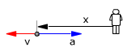 | v = -12.5 cm/s a = 2 cm/s2 |
Ecuaciones del movimiento
| $$\left.\begin{aligned}&x=A\operatorname{sen}(\omega\,t+\varphi_0)\\[4pt]&v=A\,\omega\cos(\omega\,t+\varphi_0)\\[4pt]&a=-A\,\omega^2\operatorname{sen}(\omega\,t+\varphi_0)\end{aligned}\right\}$$ |
Parámetros: A = 25 cm, ω = π/6 rad/s (T = 2π/ω = 12 s) φ0 = 3π/2 rad |
Aplicación:
Datos: a3 = 6.85 cm/s2, Incógnitas: t3, x3
$$\begin{aligned}&\left.\begin{aligned}&x_3=A\operatorname{sen}(\omega\,t_3+\varphi_0)\\[4pt]&a_3=-A\,\omega^2\operatorname{sen}(\omega\,t_3+\varphi_0)\end{aligned}\right\}\;\rightarrow\;a_3=-\omega^2\,x_3\\[6pt] &x_3=-\frac{a_3}{\omega^2}=\frac{6{,}85\ \mathrm{cm/s^2}}{(\pi/6\ \mathrm{rad/s})^2}=-25{,}0\ \mathrm{cm}\end{aligned}$$
| A cada aceleración le corresponde una única posición (Proporcional y contraria) |
7Una partícula efectúa un movimiento armónico simple cuya ecuación es:
x(t) = 0.3 cos(2t + π/6) (x: m, t:s)
a)
Determina frecuencia, período, amplitud y la fase inicial del movimiento
b)
Determina aceleración y velocidad en el instante inicial t = 0
s
Solución
Ecuación del movimiento
| $$x=0{,}3\cos\left(2\,t+\frac{\pi}{6}\right)$$ |
Parámetros: A = 0.3 m, ω = 2 rad/s (T = 2π/2 = 3,14 s, f = 1/T = 0.318 cs) φ0 = π/6 rad |
Ecuaciones del movimiento
$$\left.\begin{aligned}&x_0=A\cos(0+\varphi_0)\\[4pt]&v_0=-A\,\omega\operatorname{sen}(0+\varphi_0)\\[4pt]&a_0=-A\,\omega^2\cos(0+\varphi_0)\end{aligned}\right\}$$
Los valores iniciales se obtienen haciendo t = 0:
$$\begin{aligned}&x_0=0{,}3\ \mathrm{m}\cos\left(\frac{\pi}{6}\right)=0{,}26\ \mathrm{m}\\[6pt] &v_0=-0{,}3\ \mathrm{m}\;2\ \mathrm{\frac{rad}{s}}\operatorname{sen}\left(\frac{\pi}{6}\right)=-0{,}3\ \mathrm{\frac{m}{s}}\\[6pt] &a_0=-0{,}3\ \mathrm{m}\left(2\ \mathrm{\frac{rad}{s}}\right)^2\cos\left(\frac{\pi}{6}\right)=-1{,}04\ \mathrm{\frac{m}{s^2}}\end{aligned}$$
La partícula está 0.15 m a la derecha del observador moviéndose hacia la izquierda a 0.3 m/s y ganan-do velocidad con aceleración 1.04 m/s2 (La aceleración va a favor de la velocidad)